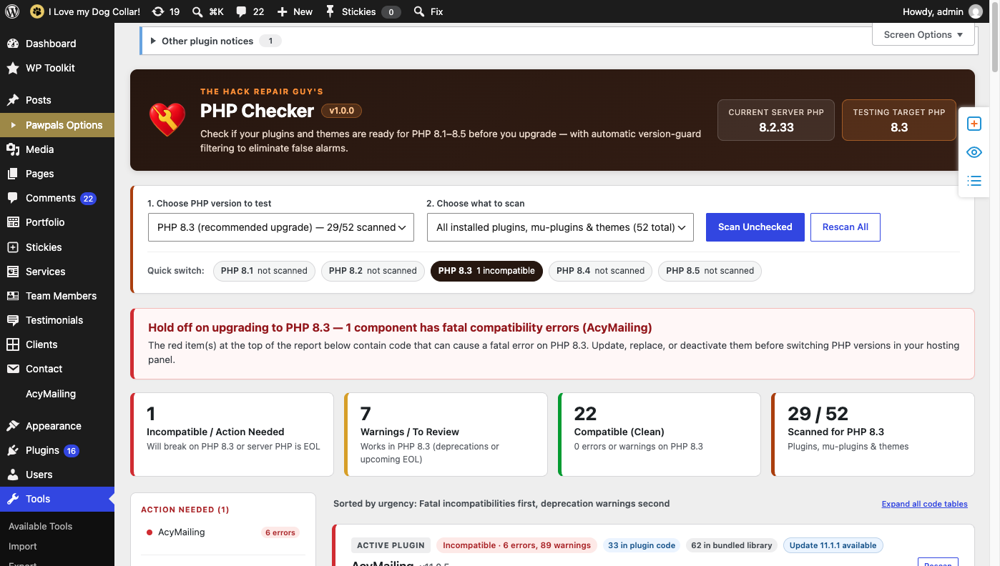
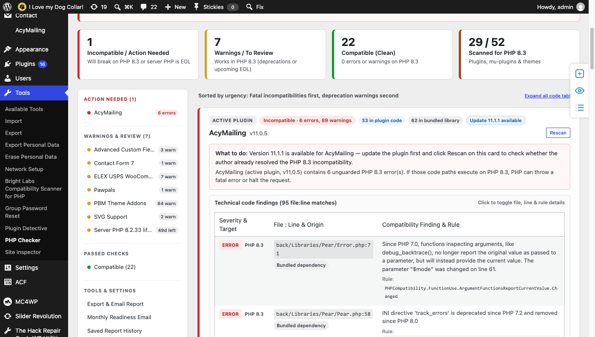

Why generic PHP scanners cry wolf (and how PHP Checker fixes it)
Most compatibility checkers dump raw PHPCS output straight onto your screen — flagging polyfills, dead legacy fallbacks, and line-ending quirks as "critical errors." PHP Checker understands PHP context.
Hundreds of false alarms
- Flags
version_compare()andPHP_VERSION_IDblocks written specifically to stay compatible across PHP versions. - Reports dead
elsebranches insidefunction_exists('error_clear_last')that never execute on PHP 7.0+. - Counts mixed CRLF/LF line-ending sniffs (
Internal.LineEndings.Mixed) as compatibility warnings. - Treats silenced
@ini_set('track_errors', 1)the same as a site-crashing fatal error. - Buries the one broken plugin under pages of vendor library tables.
Actionable, urgency-first triage
- Guard & polyfill filtering: Downgrades version-guarded and polyfilled hits to safe informational notes.
- Dead-branch tracking: Recognizes core
function_exists()guarantees and variables only assigned in unreachable fallback branches. - Fatal vs. non-fatal calibration: Only warns of white-screen crashes when actual fatal-tier rules trigger.
- Originating PHP version & scope tags: Shows whether a rule is
since PHP 7.0orsince PHP 8.2, and whether it lives in Plugin code or a Bundled library. - Quick-triage filters: Filter down to Incompatible only or Plugin / theme code only in one click.
Inside Tools › PHP Checker
A calm, plain-English dashboard built for site owners and agencies — with collapsible technical file:line tables ready whenever a developer needs them.


Built for real-world WordPress hosting
Everything runs locally inside your WordPress admin in safe, resumable 5-second slices — no timeouts on massive plugins and no third-party code uploads.
PHP 8.2+ dynamic property precision
Detects undeclared $this->prop assignments while honoring #[AllowDynamicProperties] (including inheritance), stdClass, magic __set(), and promoted properties.
Urgency-first ordering
Incompatible plugins and themes sit pinned at the top, active components precede inactive ones, and clean plugins tuck neatly into a collapsible section.
Server lifecycle & CVE checks
Tracks official php.net security support end dates and checks your running PHP patch version against known PHP security advisories.
Every "Pro" feature included free out of the box
No upsells, no license keys, and no locked tabs. Every workflow tool is enabled for every site.
Check if fixed on WordPress.org
When an installed plugin fails a scan, click one button to stream-scan its latest WordPress.org release in memory against your target PHP version before updating.
Weekly or monthly readiness emails
Schedule background rescans against your next PHP version and receive branded HTML + plain-text alerts only when new issues or failing updates appear.
Runtime deprecation notice log
Opt-in live E_DEPRECATED capture (with backtrace attribution for _deprecated_function()) plus on-demand wp-content/debug.log imports grouped by plugin.
Pending update ZIP pre-scan
Optionally pre-scan offered plugin and theme updates in memory against your running PHP version before you click Update.
Report history & diffing
Saves up to 25 local reports and highlights resolved vs. newly introduced issues between scans for the same PHP target.
1-click copy, download & email
Export a clean plain-text report for clients, hosting support, or plugin authors, or email it directly to selected site administrators.
Install in under a minute
- Download the latest release ZIP using the button below.
- In your WordPress dashboard, go to Plugins › Add New › Upload Plugin and upload the ZIP.
- Activate the plugin, open Tools › PHP Checker, pick your target PHP version (8.1–8.5), and click Scan.
Frequently asked questions
Does PHP Checker execute untrusted plugin code or slow down my live site?
No. Static analysis tokenizes PHP files in memory without ever executing them, and scans run only when you trigger them (or during opt-in background WP-Cron runs) in time-boxed 5-second slices.
Does it work on shared hosting without WP-CLI or exec()?
Yes. The entire PHP_CodeSniffer + PHPCompatibilityWP engine runs in-process inside PHP with file-level resumption so large plugins never hit PHP execution timeouts.
What is the difference between Fatal and Non-Fatal compatibility errors?
Fatal-tier rules (like removed functions or syntax removals) can crash PHP with a white screen if executed. Non-fatal errors (such as removed INI settings like @ini_set('track_errors', 1) or debug_backtrace() behavioral notices) do not crash PHP 8.x, so PHP Checker labels them clearly instead of sounding a false fatal alarm.
What if a plugin has issues only inside a bundled library?
Every finding is tagged as either Plugin / Theme code or Bundled dependency (vendor/, Libraries/, Pear/, Mailer/, Freemius/, etc.), and you can filter the report to show first-party code only.
Pair it with The Hack Repair Guy's Plugin Detective
PHP Checker catches incompatible code before you upgrade. Keep Plugin Detective handy to isolate live plugin conflicts during testing and recover quickly if an update or PHP switch ever locks you out of wp-admin.